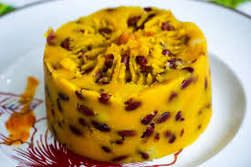

aka pilé-pommes Master
Un peu de moi
Je m'appelle Yann. J'aime passer du temps à écouter de la musique, surtout des rythmes afrobeat (Wizkid the GOAT dayo) qui me mettent de bonne humeur. Mon plat préféré est les pilé-pommes — pas plantain, ni patate, ni ignames — pilé-pommes ♡. Rien ne vaut un koumbou bien chaud après une journée bien remplie juste après un cours de Versioning avec Github ; ).
Mes Favoris
Mon repas préféré

Pilé-pommes
Album Préféré
gnx - Kendrick Lamar